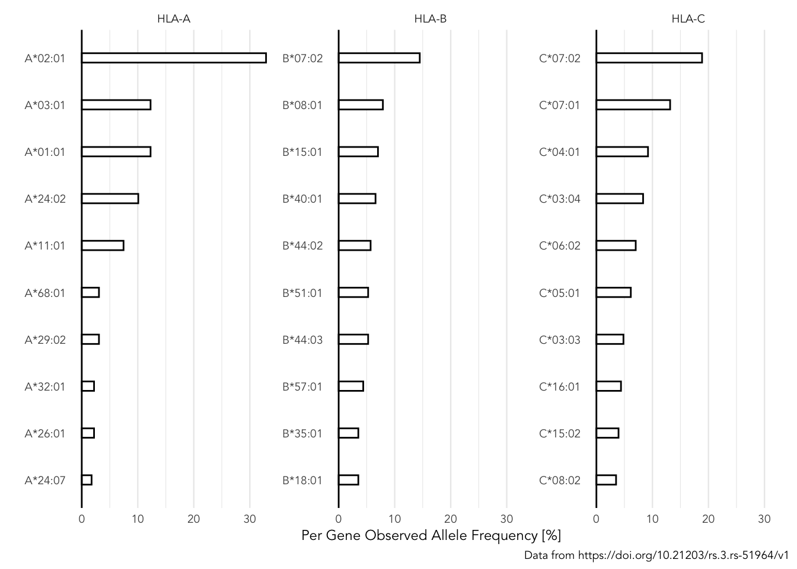
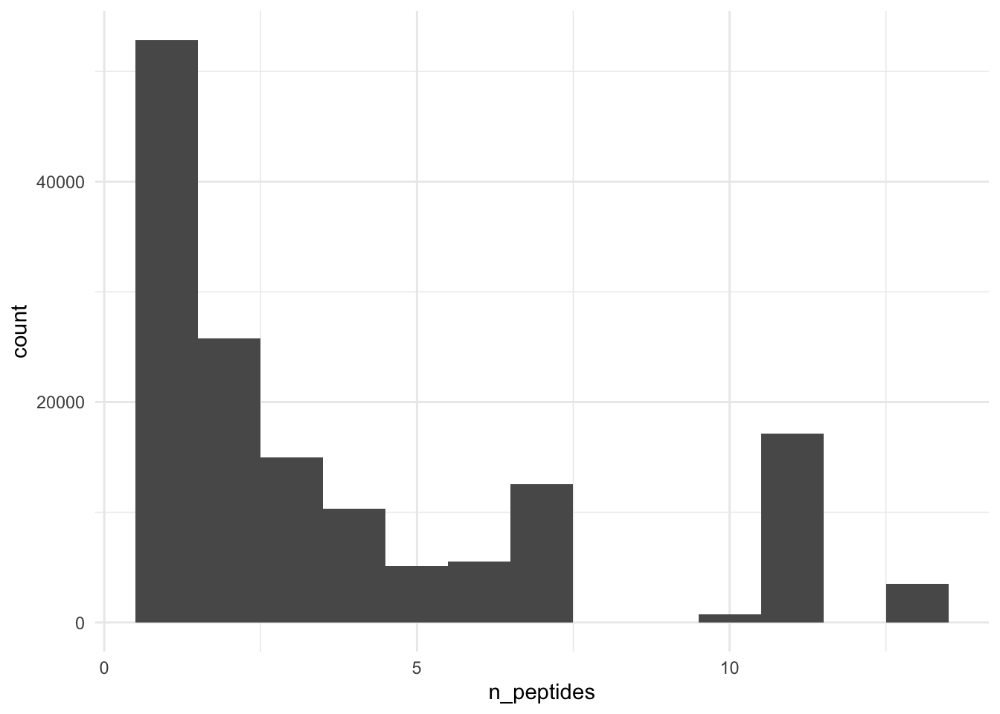
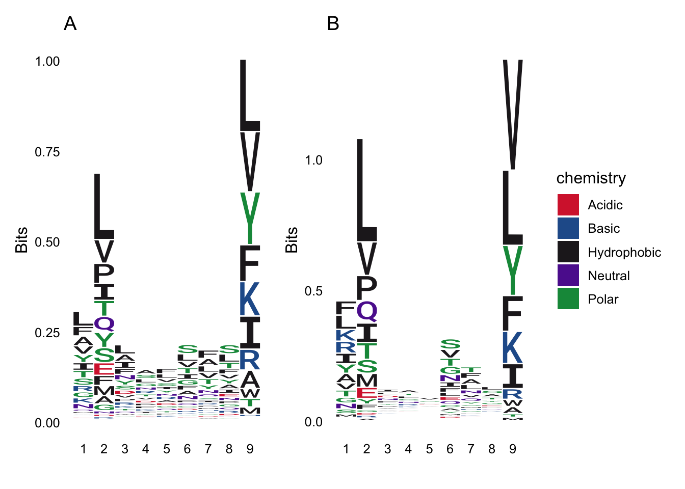
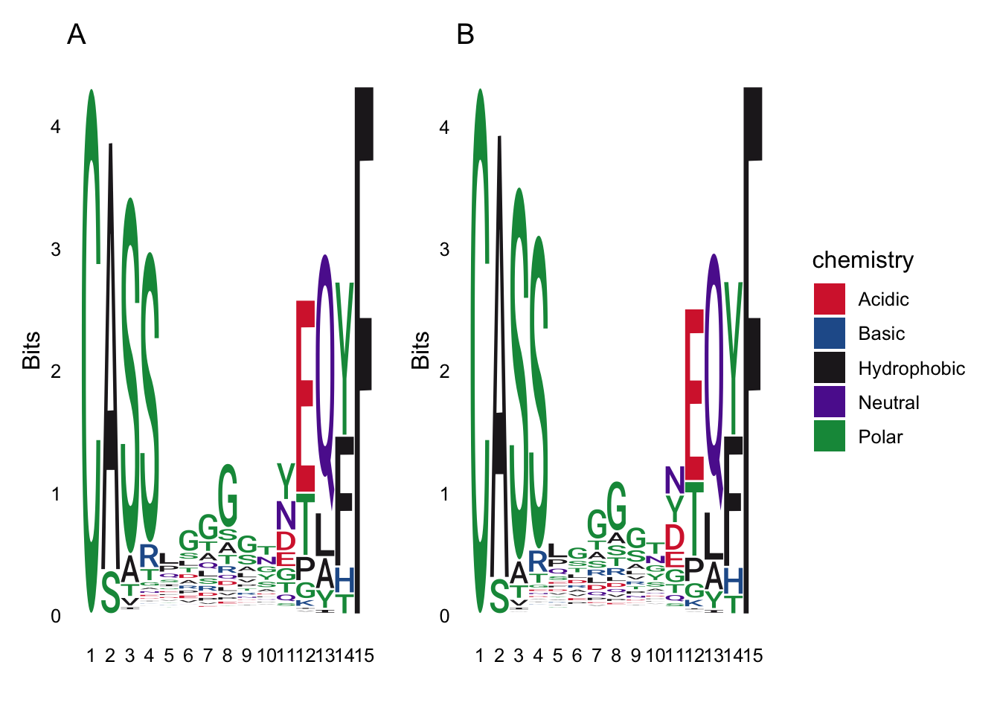

Lab 5: Data Wrangling II
Package(s)
Schedule
- 08.00 - 08.30: Recap of Lab 4
- 08.30 - 09.00: Introduction to Lab
- 09.00 - 09.15: Break
- 09.15 - 12.00: Exercises
Learning Materials
Please prepare the following materials
- R4DS2e book: Chapter 6: Data Tidying, Chapter 15: Strings, Chapter 17: Factors, Chapter 20: Joins
- Video: Tidy Data and tidyr - NB! Start at 7:45 and please note:
gather()is nowpivot_longer()andspread()is nowpivot_wider() - Video: Working with Two Datasets: Binds, Set Operations, and Joins
- Video: stringr (Playlist with 7 short videos)
Learning Objectives
A student who has met the objectives of the session will be able to:
- Understand and apply the various
str_*()-functions for string manipulation - Understand and apply the family of
*_join()-functions for combining data sets - Understand and apply
pivot_wider()andpivot_longer() - Use factors in context with plotting categorical data using
ggplot
Exercises
Intro
We are upping the game here, so expect to get stuck at some of the questions. Remember - Discuss with your group how to solve the task, revisit the materials you prepared for today and naturally, the TAs and I are happy to nudge you in the right direction. Finally, remember… Have fun!
Remember what you have worked on so far:
- RStudio
- Quarto
- ggplot
- filter
- arrange
- select
- mutate
- group_by
- summarise
- The pipe and creating pipelines
- stringr
- joining data
- pivotting data
Well done! Remember to think about this in the following as we will synthesise the above into an analysis below!
Getting Started
Today, we will work with data from a recent study of T-cell receptors and SARS-CoV-2:
Briefly, the virus invades the cells and takes over the intra-cellular machinery. Viral proteins are produced this way and the proteasome breaks down some of the proteins into smaller fragments called peptides. These peptides are transported into the endoplasmatic reticulum by the Transporter Associated with antigen Processing (TAP) protein complex. Here, they are aided by chaperones bound to the Major Histocompatilibty Complex class I (MHCI) and then across the Golgi Aparatus they finally get displayed on the surface of the cells. Note, in humans, MHC is also called Human Leukocyte Antigen (HLA). Once at the cell surface and exposed, the MHC-peptide complex can be recognised by CD8+ Cytotoxic T-Lymphocytes (CTLs) via the T-cell Receptor (TCR). The proces is summarised in the figure below. The data we will be working with today contains cohort data on sequenced T-cell receptors, viral antigens, HLA-haplotypes and clinical meta data.

Image source: 10.3389/fmicb.2015.00021
Now:
- Make sure you are in your
r_for_bio_data_science-project, you can verify this in the upper right corner - In the same place as your
r_for_bio_data_science.Rproj-file and existingdata-folder, create a new folder and name itdoc - Go to the aforementioned manuscript. Download the PDF and upload it to your new
doc-folder - Open the PDF and find the link to the data
- Go to the data site (Note, you may have to create and account to download, shouldn’t take too long)
- Find and download the file
ImmuneCODE-MIRA-Release002.1.zip(CAREFUL, do not download the superseded files) - Unpack, find the files
peptide-detail-ci.csvandsubject-metadata.csvand upload them to yourdata-folder in your RStudio Cloud session - Finally, once again, create a new Quarto document for todays exercises
Creating one data set from two data sets
Remember to load libraries first and then read the two data sets into variables peptide_data and meta_data.
Click here for hint
Think about which Tidyverse package deals with reading data and what are the file types we want to read here?- Q1: What are the dimensions of the
peptide_dataandmeta_datarespectively?, I.e. how many rows and columns corresponding to observations and varialbes? - Q2: Which variable is shared between the two data sets?
Now, join the two data sets into to one data set called peptide_meta_data using the variable from Q2 and create a pipeline, including your joining code and this bit-of-code select(-matches("D[RQP]")) - Make sure to discuss in your group what this bit-of-code actually does?
Click here for hint
Play around with the bit-of-code, e.g. change it toselect(-matches("D[RQ]")) and see what happens
- Q3: What are the dimensions of the joined data and how does this compare with Q1?
EDA: Exploraty Data Analysis I - The meta data
Let us ask the joined data (peptide_meta_data) some questions:
- Q4: How many study participants are denoted
Healthy?
Click here for hint
First find out which variable identifies the study participants- Q5: Actually, what are the study participants cohort groups and how many are in each?
Click here for hint
Perhaps there is a way tocount the cohort groups?
Now, create a histogram of the age of the study participants (Make sure to read any error-/warning-messages you may get_)
- Q6: Take a look at the age variable to understand what happened?
- Q7: How are
NAs denoted in the data?
Something’s off… Remember you can get help on ANY R-function by typing ?function_name in the console. Now, let’s fix that from get-go. Go back and find the chunk, where you read the data into your session and see if you can fix the NA-problem, when you call the read_csv.
Once you have done that, re-create the histogram of the age of the study participants and play around with and understand the binwidth-parameter.
- Q8: From the histogram, approximately how many are study participants are 33 years old?
- Q9: Compare this number to the dimensions of the
meta_data(see Q1), what happened?
Using the dplyr verbs select and distinct, re-re-create the histogram of the age of the study participants and again, play around with and understand the binwidth
- Q10: From the histogram, how many are participants are now 33 years old?
- Q11: How many of the participants are women? Men?
Recreate the below visualisation, it does not have to be 100% identical, just make sure to discuss which ggplot-components carry the plot and get those replicated.

Take some time to do some EDA, understand what is in the data, do some summaries, make some plots. Basically, you have to know the data you are working with
EDA: Exploraty Data Analysis II - The Sequence Data
Part I
The first thing we will take a look at here, is how the Subject HLA-alleles are distributed. But wait, discuss in your group, what are HLA-alleles?
Now, create subset the peptide_meta_data to the variables Subject, HLA- and save it into allele_data, like so:
# A tibble: 127 × 7
Subject `HLA-A...9` `HLA-A...10` `HLA-B...11` `HLA-B...12` `HLA-C...13`
<dbl> <chr> <chr> <chr> <chr> <chr>
1 20655 A*11:01 A*68:01 B*35:01 B*35:03 C*03:03
2 14758 A*02:01 A*33:03 B*53:01 B*58:01 C*03:02
3 361 A*01:01:01 A*02:01:01 B*15:01:01 B*51:01:01 C*01:02:01
4 1528 A*02:01:01 A*02:01:01 B*13:02:01 B*18:01:01 C*06:02:01
5 273 A*02:01:01 A*03:01:01 B*07:02:01 B*18:01:01 C*07:01:01
6 1245 A*03:01:01 A*32:01:01 B*07:02:01 B*07:02:01 C*07:02:01
7 2267 A*02:01:01 A*32:01:01 B*15:01:01 B*51:01:01 C*02:02:02
8 242 A*01:01:01 A*02:01:01 B*37:01:01 B*44:03:01 C*06:02:01
9 19943 A*02:01 A*02:01 B*35:03 B*44:02 C*04:01
10 3819 A*02:01 A*03:01 B*07:02 B*44:27 C*07:02
# ℹ 117 more rows
# ℹ 1 more variable: `HLA-C...14` <chr>
Click here for hint
Theselect()-verb can be combined with so-called selection helpers. In the console, enter ?select and perhaps you can find a helper, which selects variables, which starts_with or contains something? Also, make sure that you only have distinct observations of Subject
Before continuing, how many rows/observations do you see in the allele_data? Compare with the number of rows in the original meta_data, are they different and if so why?
Click here for hint
Use theView()-function to inspect the meta_data, click the  -button and scroll through the data
-button and scroll through the data
Then convert the data to long format and save it a new variable allele_data_long like so:
# A tibble: 762 × 3
Subject Gene Allele
<dbl> <chr> <chr>
1 20655 HLA-A...9 A*11:01
2 20655 HLA-A...10 A*68:01
3 20655 HLA-B...11 B*35:01
4 20655 HLA-B...12 B*35:03
5 20655 HLA-C...13 C*03:03
6 20655 HLA-C...14 C*04:01
7 14758 HLA-A...9 A*02:01
8 14758 HLA-A...10 A*33:03
9 14758 HLA-B...11 B*53:01
10 14758 HLA-B...12 B*58:01
# ℹ 752 more rows- Q12: How many unique alleles are there?
Using the View()-function again, look at the unique alleles - Notice something? Some alleles are e.g. A*11:01, whereas others are B*51:01:02. You can find information on why, by visiting Nomenclature for Factors of the HLA System.
Long story short, we only want to include Field 1 (allele group) and Field 2 (Specific HLA protein). You have prepared the stringr-package for today. See if you can find a way to reduce e.g. B*51:01:02 to B*51:01 and then create a new variable Allele_F_1_2 accordingly, while also removing the ...x (where x is a number) subscripts from the Gene-variable (It is an artifact from having the data in a wide format, where you cannot have two variables with the same name) and also, remove any NAs
Click here for hint
There are several ways this can be achieved, the easiest being to consider if perhaps a part of the string based on indices could be of interest. This term “a part of a string” is called a substring, perhaps thestringr-package contains a function work with substring? In the console, type stringr:: and hit tab. This will display the functions available in the stringr-package. Scroll down and find the functionst starting with str_ and look for on, which might be relevant and remember you can use ?function_name to get more information on how a given function works.
# A tibble: 684 × 4
Subject Gene Allele Allele_F_1_2
<dbl> <chr> <chr> <chr>
1 20655 HLA-A A*11:01 A*11:01
2 20655 HLA-A A*68:01 A*68:01
3 20655 HLA-B B*35:01 B*35:01
4 20655 HLA-B B*35:03 B*35:03
5 20655 HLA-C C*03:03 C*03:03
6 20655 HLA-C C*04:01 C*04:01
7 14758 HLA-A A*02:01 A*02:01
8 14758 HLA-A A*33:03 A*33:03
9 14758 HLA-B B*53:01 B*53:01
10 14758 HLA-B B*58:01 B*58:01
# ℹ 674 more rows- Q13: How many unique alleles are there now?
Q14: What are the top 3 alleles in terms of counts in the data?
Q15: Per gene and in terms of percent, what are the 10 top alleles? Recreate this plot to answer the question GROUP ASSIGNMENT:

Click here for hint
What doesfct_reorder()´do? Also, consider when working per gene, you will probably have to include that grouping in your pipeline - Remember we don't loop, we func! Also, you can use a combination of thearrange()- andslice()`-functions to get top or bottom something observations.
Part II
This last part is rather tricky and therefore optional. It will take some time and trial-and-error to complete, so if you’re up for it, feel free to take on the challenge to test and expand your skills!
Now, that we have worked with the HLA-alleles, we will take a look into how the peptides bind to the HLA-alleles.
First, create this data set from your peptide_meta_data data set and save in a new variable sequence_data (drop ANY rows contaning NAs ):
# A tibble: 148,489 × 8
`TCR BioIdentity` `Amino Acids` `HLA-A...9` `HLA-A...10` `HLA-B...11`
<chr> <chr> <chr> <chr> <chr>
1 CASSAQGTGDRGYTF+TCRBV27-… ADAGFIKQY,AE… A*11:01 A*68:01 B*35:01
2 CASSLVATGNTGELFF+TCRBV07… ADAGFIKQY,AE… A*02:01 A*33:03 B*53:01
3 CASSKGTVSGLSG+TCRBV21-01… ADAGFIKQY,AE… A*11:01 A*68:01 B*35:01
4 CALKVGADTQYF+TCRBV30-01+… ADAGFIKQY,AE… A*01:01:01 A*02:01:01 B*15:01:01
5 CASSLWASGRGGTGELFF+TCRBV… ADAGFIKQY,AE… A*11:01 A*68:01 B*35:01
6 CASSLLGWEQLDEQFF+TCRBV27… ADAGFIKQY,AE… A*02:01:01 A*02:01:01 B*13:02:01
7 CASSSGTGVYGYTF+TCRBV12-X… ADAGFIKQY,AE… A*11:01 A*68:01 B*35:01
8 CASSPLEWEGVTEAFF+TCRBV06… ADAGFIKQY,AE… A*02:01:01 A*03:01:01 B*07:02:01
9 CASSFWSSGRGGTDTQYF+TCRBV… ADAGFIKQY,AE… A*11:01 A*68:01 B*35:01
10 CASSAGQGASDEQFF+TCRBV07-… ADAGFIKQY,AE… A*03:01:01 A*32:01:01 B*07:02:01
# ℹ 148,479 more rows
# ℹ 3 more variables: `HLA-B...12` <chr>, `HLA-C...13` <chr>,
# `HLA-C...14` <chr>- Q16: How many rows contained
NAs? - Q17: Is this data tidy? Explain why you answered yes or no
Now, google tidyr separate and figure out how this works. Then fix the TCR BioIdentity-variable like so:
# A tibble: 148,489 × 10
CDR3b v_gene j_gene `Amino Acids` `HLA-A...9` `HLA-A...10` `HLA-B...11`
<chr> <chr> <chr> <chr> <chr> <chr> <chr>
1 CASSAQGTGD… TCRBV… TCRBJ… ADAGFIKQY,AE… A*11:01 A*68:01 B*35:01
2 CASSLVATGN… TCRBV… TCRBJ… ADAGFIKQY,AE… A*02:01 A*33:03 B*53:01
3 CASSKGTVSG… TCRBV… TCRBJ… ADAGFIKQY,AE… A*11:01 A*68:01 B*35:01
4 CALKVGADTQ… TCRBV… TCRBJ… ADAGFIKQY,AE… A*01:01:01 A*02:01:01 B*15:01:01
5 CASSLWASGR… TCRBV… TCRBJ… ADAGFIKQY,AE… A*11:01 A*68:01 B*35:01
6 CASSLLGWEQ… TCRBV… TCRBJ… ADAGFIKQY,AE… A*02:01:01 A*02:01:01 B*13:02:01
7 CASSSGTGVY… TCRBV… TCRBJ… ADAGFIKQY,AE… A*11:01 A*68:01 B*35:01
8 CASSPLEWEG… TCRBV… TCRBJ… ADAGFIKQY,AE… A*02:01:01 A*03:01:01 B*07:02:01
9 CASSFWSSGR… TCRBV… TCRBJ… ADAGFIKQY,AE… A*11:01 A*68:01 B*35:01
10 CASSAGQGAS… TCRBV… TCRBJ… ADAGFIKQY,AE… A*03:01:01 A*32:01:01 B*07:02:01
# ℹ 148,479 more rows
# ℹ 3 more variables: `HLA-B...12` <chr>, `HLA-C...13` <chr>,
# `HLA-C...14` <chr>
Click here for hint
What character seems to be separating the sequence from the TCRB-v-gene and TCRB-j-gene? Also, sometimes when you want to separate on characters, that can mean more than one thing, you will have to do what is called an escape, which is done using a double back-slash\\x, where x here denotes the aforementioned character with double meaning
- Q18: Is this data tidy now? Explain why you answered yes or no
Add a new variable n_peptides to your data set, which counts how many peptides are listed in Amino Acids variable
Click here for hint
Is there a package designed specifically for working with strings? If so perhaps it can be used for some trickery in connection with counting how many times “something” appears in a string?Create a histogram of distribution of the n_peptides variable

- Q19: What is the maximum number of peptides seen for one observation?
Important: Now you can choose one of two paths in the exercises and either is fine! Either you proceed to A (a bit more difficult) or scroll down to B (a bit less difficult)!
A
Now, Using str_c() and seq(), see if you can re-create this:
[1] "peptide_1" "peptide_2" "peptide_3" "peptide_4" "peptide_5"But changing the last peptide_n, such that n is the maximum number of peptides from Q19, 5 won’t do. Then use that to fix the Amino Acids-variable, like so:
Warning: Expected 13 pieces. Missing pieces filled with `NA` in 145021 rows [1, 2, 3, 4,
5, 6, 7, 8, 9, 10, 11, 12, 13, 14, 15, 16, 17, 18, 19, 20, ...].# A tibble: 148,489 × 23
CDR3b v_gene j_gene peptide_1 peptide_2 peptide_3 peptide_4 peptide_5
<chr> <chr> <chr> <chr> <chr> <chr> <chr> <chr>
1 CASSAQGTGDRG… TCRBV… TCRBJ… ADAGFIKQY AELEGIQY LADAGFIK… TLADAGFIK <NA>
2 CASSLVATGNTG… TCRBV… TCRBJ… ADAGFIKQY AELEGIQY LADAGFIK… TLADAGFIK <NA>
3 CASSKGTVSGLSG TCRBV… TCRBJ… ADAGFIKQY AELEGIQY LADAGFIK… TLADAGFIK <NA>
4 CALKVGADTQYF TCRBV… TCRBJ… ADAGFIKQY AELEGIQY LADAGFIK… TLADAGFIK <NA>
5 CASSLWASGRGG… TCRBV… TCRBJ… ADAGFIKQY AELEGIQY LADAGFIK… TLADAGFIK <NA>
6 CASSLLGWEQLD… TCRBV… TCRBJ… ADAGFIKQY AELEGIQY LADAGFIK… TLADAGFIK <NA>
7 CASSSGTGVYGY… TCRBV… TCRBJ… ADAGFIKQY AELEGIQY LADAGFIK… TLADAGFIK <NA>
8 CASSPLEWEGVT… TCRBV… TCRBJ… ADAGFIKQY AELEGIQY LADAGFIK… TLADAGFIK <NA>
9 CASSFWSSGRGG… TCRBV… TCRBJ… ADAGFIKQY AELEGIQY LADAGFIK… TLADAGFIK <NA>
10 CASSAGQGASDE… TCRBV… TCRBJ… ADAGFIKQY AELEGIQY LADAGFIK… TLADAGFIK <NA>
# ℹ 148,479 more rows
# ℹ 15 more variables: peptide_6 <chr>, peptide_7 <chr>, peptide_8 <chr>,
# peptide_9 <chr>, peptide_10 <chr>, peptide_11 <chr>, peptide_12 <chr>,
# peptide_13 <chr>, `HLA-A...9` <chr>, `HLA-A...10` <chr>,
# `HLA-B...11` <chr>, `HLA-B...12` <chr>, `HLA-C...13` <chr>,
# `HLA-C...14` <chr>, n_peptides <dbl>and convert the data and save it into sequence_data_long, like so:
# A tibble: 1,930,357 × 12
CDR3b v_gene j_gene `HLA-A...9` `HLA-A...10` `HLA-B...11` `HLA-B...12`
<chr> <chr> <chr> <chr> <chr> <chr> <chr>
1 CASSAQGTGDR… TCRBV… TCRBJ… A*11:01 A*68:01 B*35:01 B*35:03
2 CASSAQGTGDR… TCRBV… TCRBJ… A*11:01 A*68:01 B*35:01 B*35:03
3 CASSAQGTGDR… TCRBV… TCRBJ… A*11:01 A*68:01 B*35:01 B*35:03
4 CASSAQGTGDR… TCRBV… TCRBJ… A*11:01 A*68:01 B*35:01 B*35:03
5 CASSAQGTGDR… TCRBV… TCRBJ… A*11:01 A*68:01 B*35:01 B*35:03
6 CASSAQGTGDR… TCRBV… TCRBJ… A*11:01 A*68:01 B*35:01 B*35:03
7 CASSAQGTGDR… TCRBV… TCRBJ… A*11:01 A*68:01 B*35:01 B*35:03
8 CASSAQGTGDR… TCRBV… TCRBJ… A*11:01 A*68:01 B*35:01 B*35:03
9 CASSAQGTGDR… TCRBV… TCRBJ… A*11:01 A*68:01 B*35:01 B*35:03
10 CASSAQGTGDR… TCRBV… TCRBJ… A*11:01 A*68:01 B*35:01 B*35:03
# ℹ 1,930,347 more rows
# ℹ 5 more variables: `HLA-C...13` <chr>, `HLA-C...14` <chr>, n_peptides <dbl>,
# peptide_n <chr>, peptide <chr>- Q20: How many observations are now in
sequence_data_long?
Remove NAs, fix the HLA-alleles, remove redundant columns and observations, like so:
# A tibble: 3,242,120 × 5
CDR3b v_gene j_gene peptide allele
<chr> <chr> <chr> <chr> <chr>
1 CASSAQGTGDRGYTF TCRBV27-01 TCRBJ01-02 ADAGFIKQY A*11:01
2 CASSAQGTGDRGYTF TCRBV27-01 TCRBJ01-02 ADAGFIKQY A*68:01
3 CASSAQGTGDRGYTF TCRBV27-01 TCRBJ01-02 ADAGFIKQY B*35:01
4 CASSAQGTGDRGYTF TCRBV27-01 TCRBJ01-02 ADAGFIKQY B*35:03
5 CASSAQGTGDRGYTF TCRBV27-01 TCRBJ01-02 ADAGFIKQY C*03:03
6 CASSAQGTGDRGYTF TCRBV27-01 TCRBJ01-02 ADAGFIKQY C*04:01
7 CASSAQGTGDRGYTF TCRBV27-01 TCRBJ01-02 AELEGIQY A*11:01
8 CASSAQGTGDRGYTF TCRBV27-01 TCRBJ01-02 AELEGIQY A*68:01
9 CASSAQGTGDRGYTF TCRBV27-01 TCRBJ01-02 AELEGIQY B*35:01
10 CASSAQGTGDRGYTF TCRBV27-01 TCRBJ01-02 AELEGIQY B*35:03
# ℹ 3,242,110 more rows- Q21: How many observations now? Is this data tidy now?
B
Now, let us proceed with the observations, where we just have a single peptide annotated, so subset your data accordingly, using the n_peptides variable you created, like so:
# A tibble: 52,857 × 11
CDR3b v_gene j_gene `Amino Acids` `HLA-A...9` `HLA-A...10` `HLA-B...11`
<chr> <chr> <chr> <chr> <chr> <chr> <chr>
1 CASSLSAGFG… TCRBV… TCRBJ… SEVGPEHSLAEY A*01:01:01 A*02:01:01 B*40:01:02
2 CASSLTGQTD… TCRBV… TCRBJ… SEVGPEHSLAEY A*02:01 A*26:01 B*44:02
3 CASSLDVWET… TCRBV… TCRBJ… SEVGPEHSLAEY A*01:01:01 A*24:02:01 B*08:01:01
4 CASSASGTEE… TCRBV… TCRBJ… SEVGPEHSLAEY A*02:01 A*26:01 B*44:02
5 CASSEGTANT… TCRBV… TCRBJ… SEVGPEHSLAEY A*11:01:01 A*24:02:01 B*15:01:01
6 CASSLSGYQE… TCRBV… TCRBJ… SEVGPEHSLAEY A*02:01 A*26:01 B*44:02
7 CASTPGPSYE… TCRBV… TCRBJ… SEVGPEHSLAEY A*02:01 A*03:01 B*40:01
8 CASSLSGATD… TCRBV… TCRBJ… SEVGPEHSLAEY A*02:01 A*26:01 B*44:02
9 CASWKRGGRE… TCRBV… TCRBJ… SEVGPEHSLAEY A*02:01 A*03:01 B*40:01
10 CASSSPGTGV… TCRBV… TCRBJ… SEVGPEHSLAEY A*01:01 A*02:01 B*35:02
# ℹ 52,847 more rows
# ℹ 4 more variables: `HLA-B...12` <chr>, `HLA-C...13` <chr>,
# `HLA-C...14` <chr>, n_peptides <dbl>Then collect all the alleles in one variable, like so:
# A tibble: 297,910 × 5
CDR3b v_gene j_gene `Amino Acids` allele
<chr> <chr> <chr> <chr> <chr>
1 CASSLSAGFGYTF TCRBV27-01 TCRBJ01-02 SEVGPEHSLAEY A*01:01:01
2 CASSLSAGFGYTF TCRBV27-01 TCRBJ01-02 SEVGPEHSLAEY A*02:01:01
3 CASSLSAGFGYTF TCRBV27-01 TCRBJ01-02 SEVGPEHSLAEY B*40:01:02
4 CASSLSAGFGYTF TCRBV27-01 TCRBJ01-02 SEVGPEHSLAEY B*52:01:02
5 CASSLSAGFGYTF TCRBV27-01 TCRBJ01-02 SEVGPEHSLAEY C*03:04:01
6 CASSLSAGFGYTF TCRBV27-01 TCRBJ01-02 SEVGPEHSLAEY C*16:01:01
7 CASSLTGQTDTQYF TCRBV07-09 TCRBJ02-03 SEVGPEHSLAEY A*02:01
8 CASSLTGQTDTQYF TCRBV07-09 TCRBJ02-03 SEVGPEHSLAEY A*26:01
9 CASSLTGQTDTQYF TCRBV07-09 TCRBJ02-03 SEVGPEHSLAEY B*44:02
10 CASSLTGQTDTQYF TCRBV07-09 TCRBJ02-03 SEVGPEHSLAEY B*52:01
# ℹ 297,900 more rows
Click here for hint
Think about the format of the data, is it wide or is it long? How do we convert between these formats?…and let’s also go ahead and change the name of the Amino Acids-variable to peptide
Creating Sequence Logos
Before we continue, let’s just re-fix the alleles, such that e.g. A*02:01:01 becomes A*02:01, recall we did this earlier in today’s exercises. Also, this might create some multiplicates, so make sure to throw in a distinct() and finally add to your pipeline a new variable k_peptide, which determines the length of the peptide and a k_CDR3B likewise.
As we have touched upon multiple times, R is very flexible and naturally you can also create sequence logos. Finally, let us create a binding motif using the package ggseqlogo (More info here). Subset the final sequence_data_long-data to A*02:01 and unique observations of peptides of length 9
Click here for hint
You can pipe a vector of peptides into ggseqlogo, but perhaps you first need topull that vector from the relevant variable in your tibble? Also, consider before that, that you’ll need to make sure, you are only looking at peptides of length 9

Note: Here, the A and B denote either route A or B through this last part
If you fancy, repeat for the most prevalent B-allele, see Q15
- Q22: Which positions in the peptide determines binding to HLA?
Click here for hint
Recall your Introduction to Bioinformatics course?Now finally, re-create this logo using the CDR3B-sequences and A*02:01-alleles:

Epilogue
That’s it for today - I know this overwhelming now, but commit to it and you WILL be plenty rewarded! I hope today was at least a glimpse into the flexibility and capabilities of using tidyverse for applied Bio Data Science